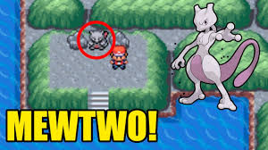
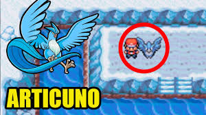
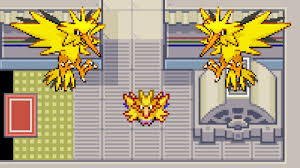
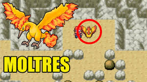
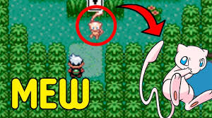

| Home | Batalhas | História | Iniciais | Líderes | Imagens | Lendários | Mapa | Links | Contato |
Os pokémons lendários são criaturas raras e extremamente poderosas em Pokémon Fire Red. Eles geralmente aparecem em locais específicos e são mais difíceis de capturar do que os pokémons comuns.
Tipo: Psíquico. Localização: Cerulean Cave. Mewtwo é considerado o pokémon mais forte do jogo, com altíssimo ataque especial e velocidade. Ele só pode ser encontrado após o jogador vencer a Liga Pokémon, sendo um grande desafio para capturar.

Tipo: Gelo/Voador. Localização: Seafoam Islands. Articuno possui ataques baseados em gelo e é muito eficiente contra pokémons do tipo dragão, planta e voador. Sua captura exige paciência devido à dificuldade do local.

Tipo: Elétrico/Voador. Localização: Power Plant. Zapdos é conhecido por sua alta velocidade e ataques elétricos poderosos, sendo uma excelente escolha contra pokémons do tipo água e voador.

Tipo: Fogo/Voador. Localização: Mt. Ember. Moltres possui grande poder ofensivo com ataques de fogo e é muito eficaz contra pokémons do tipo planta e gelo.

Tipo: Psíquico. Localização: Evento especial. Mew é um pokémon extremamente raro e não é encontrado normalmente no jogo. Ele é conhecido por sua habilidade de aprender praticamente todos os golpes existentes.

Os pokémons lendários representam grandes desafios e conquistas no jogo. Capturá-los é um objetivo importante para muitos jogadores.
Dica: salve o jogo antes de tentar capturar um pokémon lendário, pois eles são difíceis de capturar e podem fugir ou ser derrotados.